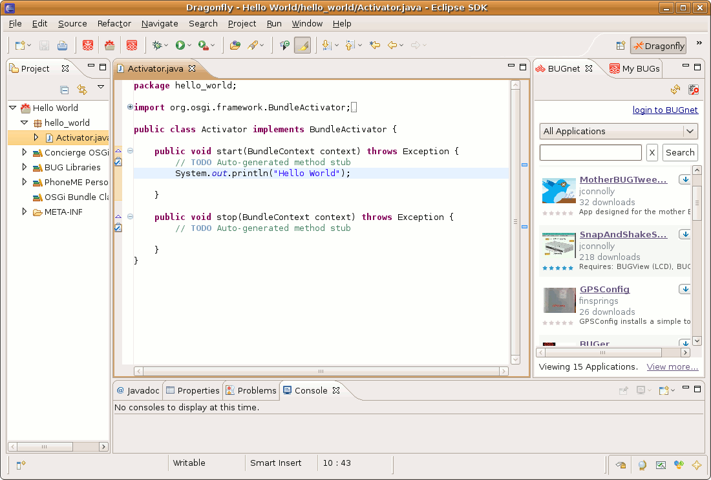

Anatomy of a BUG Application - Building a Basic Application
Create a basic application for BUG that displays a message on the system output console.
- If necessary, switch perspective to the Dragonfly perspective.
- Select the New BUG Project icon
 in the toolbar.
in the toolbar.
- In the New BUG Project window, in the Name field, type:
Hello World
- Click Finish.
- In the Project Explorer view, expand the node for the Hello World application.
- Expand the node for the hello_world package.
- Double-click on Activator.java to edit.
- Add System.out.println("Hello World :)"); after the line that begins with public void start.
- Select CTRL+S to save entry.
- To run this application, start or restart the Virtual BUG and look for the output in the Console.
